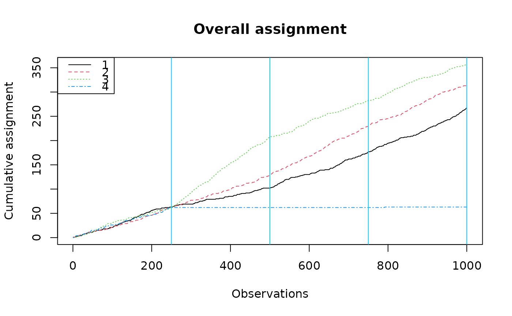

Plot cumulative assignment for bandit experiment.
Source:R/experiment_utils.R
plot_cumulative_assignment.RdGenerates a plot of the cumulative assignment.
Examples
set.seed(123)
A <- 1000
K <- 4
xs <- matrix(runif(A * K), nrow = A, ncol = K)
ys <- matrix(rbinom(A * K, 1, 0.5), nrow = A, ncol = K)
batch_sizes <- c(250, 250, 250, 250)
results <- run_experiment(ys = ys,
floor_start = 1/K,
floor_decay = 0.9,
batch_sizes = batch_sizes,
xs = xs)
plot_cumulative_assignment(results, batch_sizes)
